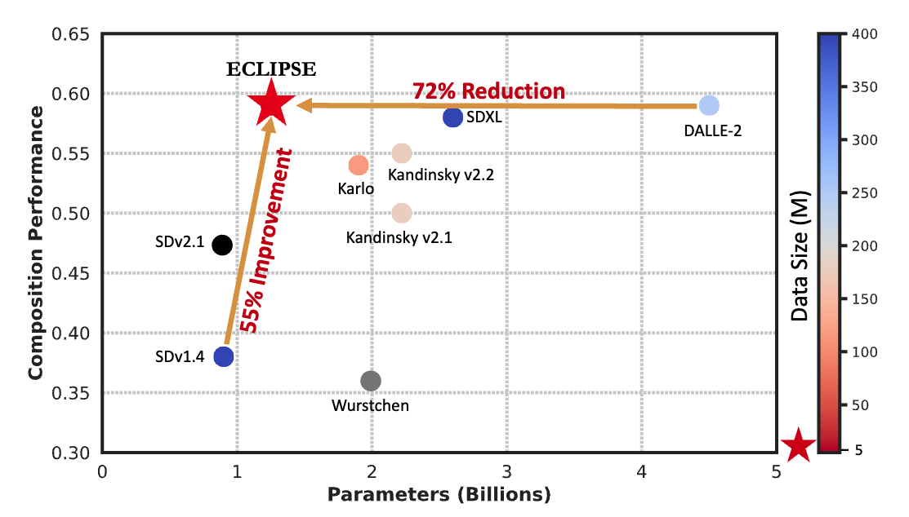
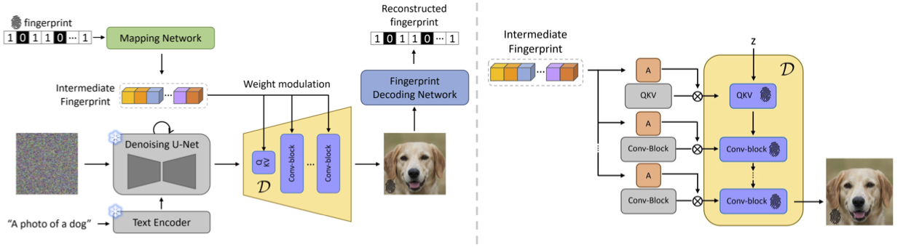
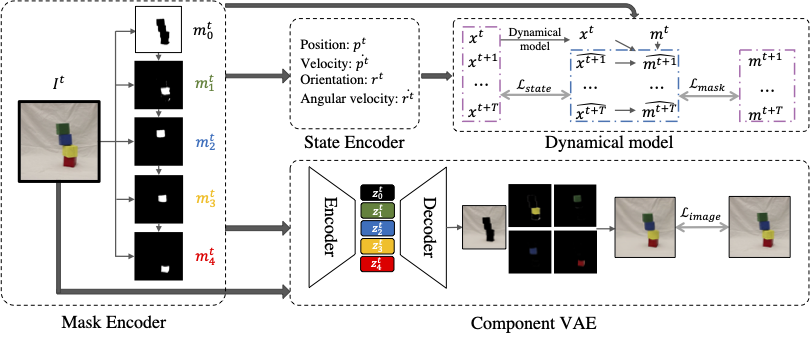
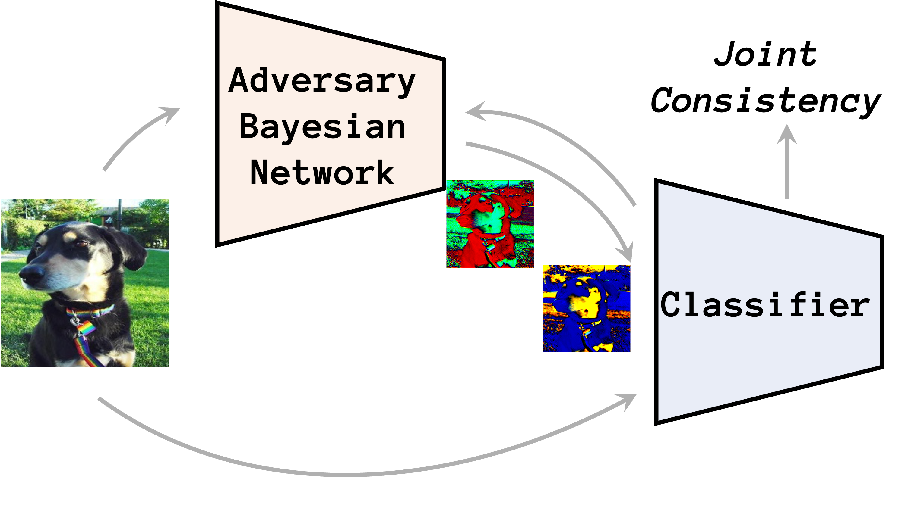
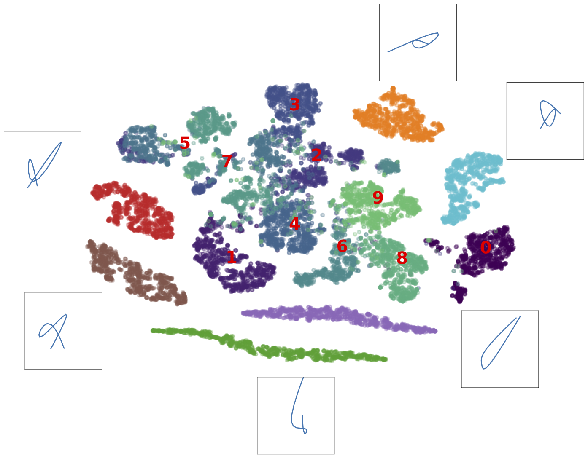
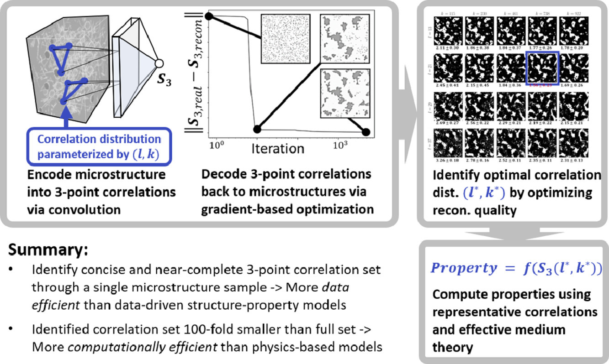

|
Sheng Cheng I'm a PhD student at ASU. I'm working with Yezhou Yang. I closely collaborate with Yezhou Yang At Google I've worked on Glass, Lens Blur, HDR+, VR, Portrait Mode, Portrait Light, and Maps. I did my PhD at UC Berkeley, where I was advised by Jitendra Malik. I've received the PAMI Young Researcher Award. |

|
ResearchI'm interested in computer vision and machine learning. My focus lies in the domain of vision & language (particually in Text-to-Image generation) and domain generalization & robustness. |
|
 |
Revising Text-to-Image Prior for Improved Text Conditioned Image Generations
Maitreya Patel, Changhoon Kim, Sheng Cheng, Chitta Baral, Yezhou Yang project page / arXiv Improving the Parameter and Data Efficiency of the Text-to-Image Priors for UnCLIP Family Models with constrastive loss. |
|
 |
WOUAF: Weight Modulation for User Attribution and Fingerprinting in Text-to-Image Diffusion Models
Changhoon Kim, Kyle Min, Maitreya Patel, Sheng Cheng, Yezhou Yang NeurIPS Diffusion workshop, 2023 project page / arXiv Preconditioning based on camera parameterization helps NeRF and camera extrinsics/intrinsics optimize better together. |
|
 |
Self-supervised Learning to Discover Physical Objects and Predict Their Interactions from Raw Videos
Sheng Cheng, Yezhou Yang, Yang Jiao, Yi Ren NeurIPS AI4Science workshop, 2023 project page / arXiv Preconditioning based on camera parameterization helps NeRF and camera extrinsics/intrinsics optimize better together. |
|
 |
Adversarial Bayesian Augmentation for Single-Source Domain Generalization
Sheng Cheng, Tejas Gokhale, Yezhou Yang ICCV, 2023 project page / arXiv Preconditioning based on camera parameterization helps NeRF and camera extrinsics/intrinsics optimize better together. |
|
 |
SSR-GNNs: Stroke-based Sketch Representation with Graph Neural Networks
Sheng Cheng, Yi Ren, Yezhou Yang CVPR Sketch workshop, 2022 project page / arXiv Preconditioning based on camera parameterization helps NeRF and camera extrinsics/intrinsics optimize better together. |

|
Data-Driven Learning of Three-Point Correlation Functions as Microstructure Representations
Sheng Cheng, Yang Jiao, Yi Ren, Acta Materialia, 2022 project page / arXiv Preconditioning based on camera parameterization helps NeRF and camera extrinsics/intrinsics optimize better together. |
|
 |
Evaluating the Robustness of Bayesian Neural Networks Against Different Types of Attacks
Yutian Pang, Sheng Cheng, Jueming Hu, Yongming Liu, CVPR Adversarial Learning workshop, 2021 project page / arXiv Preconditioning based on camera parameterization helps NeRF and camera extrinsics/intrinsics optimize better together. |
Work Experience |
|
Amazon Alexa, 2023 Summer
UltruFit.ai, 2022 Summer Hikvision Research, 2019 Spring |
Service & HonorReviwer: CVPR 2024; CVPR 2022, 2023 workshop2023-24 ASU Graduate College Travel Award |
|
Feel free to steal this website's source code. Do not scrape the HTML from this page itself, as it includes analytics tags that you do not want on your own website — use the github code instead. Also, consider using Leonid Keselman's Jekyll fork of this page. |